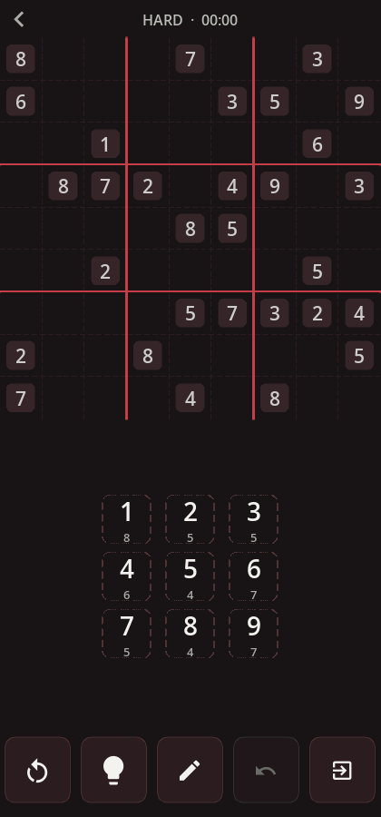
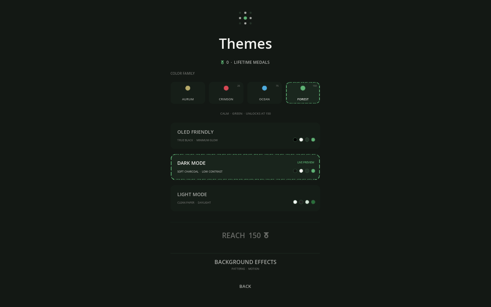

01
A clearer board
Dashed cell guides, exact 3 × 3 separators, matching-number highlights, and plain player-entered digits keep the puzzle calm.
In active development
A quiet, tactile take on the classic grid. Built to feel at home on a phone, a Linux desktop, and everywhere the puzzle goes next.

The grid comes first
Every interaction is designed around reading the board quickly and keeping your train of thought intact.
Dashed cell guides, exact 3 × 3 separators, matching-number highlights, and plain player-entered digits keep the puzzle calm.
Subtle motion responds to touch, mouse, keyboard, and gamepad without moving the controls out from under you.
Pencil marks, undo and redo, optional assistance, scoring, and personal bests are close when needed and invisible when not.
Same puzzle. Same moment.
Private five-character rooms and Quick Play use synchronized, authoritative matches. Both players ready up, share a countdown, and race on the exact same grid.
Online systems are built and locally verified. Public server rollout is still in progress.
Make the grid yours
Aurum, Crimson, Ocean, and Forest each come in OLED Friendly, Dark, and Light variants—with quiet backgrounds and profile frames earned along the way.

Made to travel
Shared C++ game code keeps the experience consistent while small platform layers handle windows, touch, haptics, and mobile services.
Arch development and release builds verified
SDLActivity debug APK and native libraries verified
Native build and packaging path prepared
Built for this game
WSudoku uses C++20, SDL3, CMake, and Ninja. Its small 2D engine owns only what the game needs: rendering, input, audio, animation, UI, assets, saves, and networking.
Take your time
WSudoku is in active development. Contact Kvass Games for support, or use the public account page to request deletion of your data.